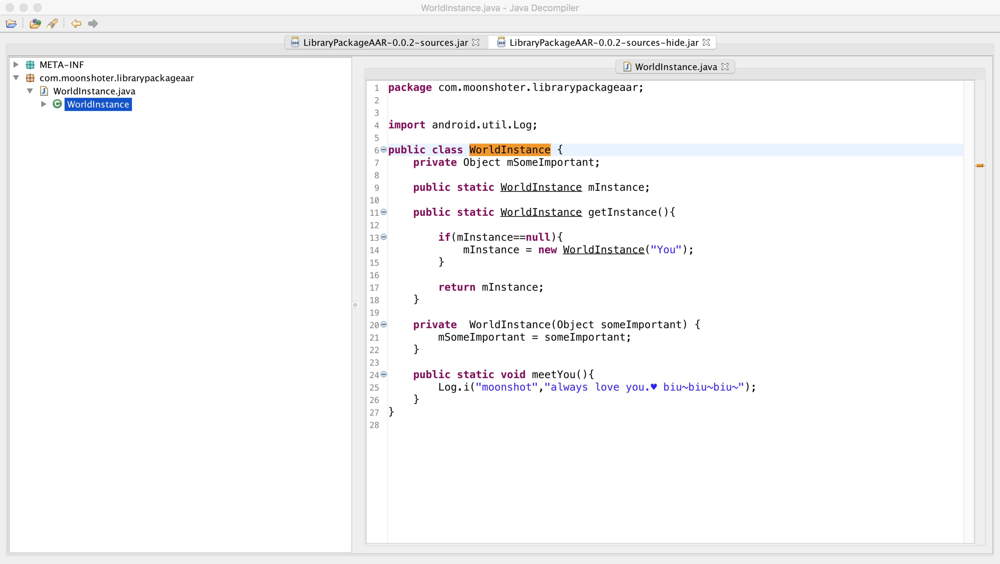
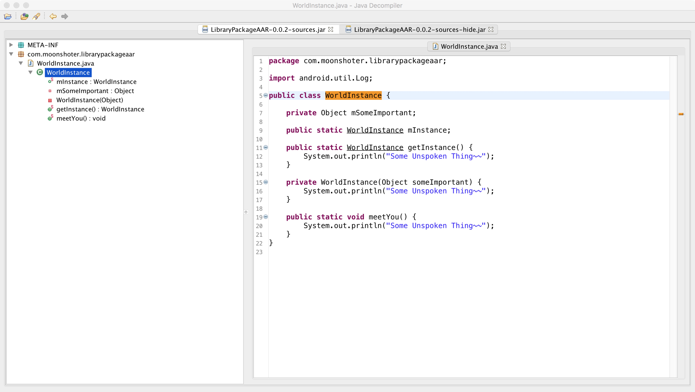

背景
开发过程中可能会有一些对外的依赖库或者SDK。一般会通过代码混淆核心实现，来提高破解成本。如果能隐藏对外的代码那就更好了。
Maven
Maven总的来说是一个项目管理工具。平时开发中，我们可以简单理解成依赖库的仓库中心。我们的可以在上面取到我们的想要的第三方库。
一般而言，一个依赖库上传到maven上会包含这几个文件：
- xx-source.jar 依赖库源码 java文件的压缩包
- xx.jar/xx.aar 实际编译的依赖代码 class文件的压缩包
- xxjacdoc.jar 接口文档
- xx.pom 依赖库的一些标准信息
通过修改上传source.jar文件,当其他依赖该库，则会关联到修改后的源码。
寻找修改入口
一般Android项目我们会上传到jcenter或者其他Maven服务上.（第一次会相当折腾） 上传代码到Maven教程
其中生成source.jar的gradle task一般是这样的task sourcesJar(type: Jar) {
group "artifacts"
from android.sourceSets.main.java.srcDirs //源码路径
classifier = 'sources' //文件名后缀
filter(CodeFilterReader.class) //制定Filter 不制定则原文件写入
}
实际上一个继承org.gradle.jvm.tasks.Jar的task （实际上也是Zip任务）.实际上就是把制定的目录压缩成jar文件。这就是我们修改的入口。
然后这个task支持指定一个FilterReader。也就是在打包过程中的每一个文件流都会经过我们指定的IO流。
只要把原本的文件流 剔除修改成我们想要的文件流，则打包出来的就会是我们隐藏后的源码。
简单讲就是 在把若干文件压缩成Jar包 Origin-Files —> Files-Zip
然后通过FilterReader： Origin-Files —> FilterReadr—> Changed-FIles—> Files-Zip
整体思路如下。
static class CodeFilterReader extends FilterReader { |
接下来就是如何解析修改源码了。
（然后这里就要记录下自己犯的错误）
这边笔者想当然（脑子一抽）的直接使用ASM去处理，然后一直失败。
问题出现在ASM是字节码操作框架，可以理解成是操作class文件的。然而我们这边处理的是源码文本java文件。
后续直接采用com.github.javaparser框架进行处理。详见HideSourceTask
实际效果
修改前：

修改后：

在AS上查看
repositories { |
//0.0.2 未隐藏源码 0.0.3隐藏了源码 (运行效果与直接查看依赖的jar不一致) |
藏不住的源码
俗话说 人有两样东西是无法隐瞒的 ：咳嗽 和 爱 biu biu biu～
实际上对外依赖库的源码也是。实际字节码文件已上传到maven上，可以直接下来相应的jar包或者aar文件 。然后通过反编译字节码文件获取到java源码。
所以我们只是做了一个微小的工作，提供下门槛。